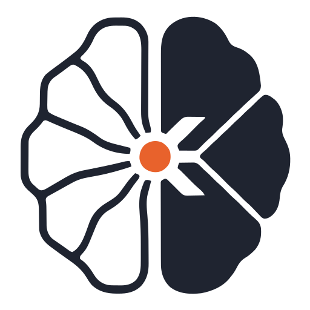
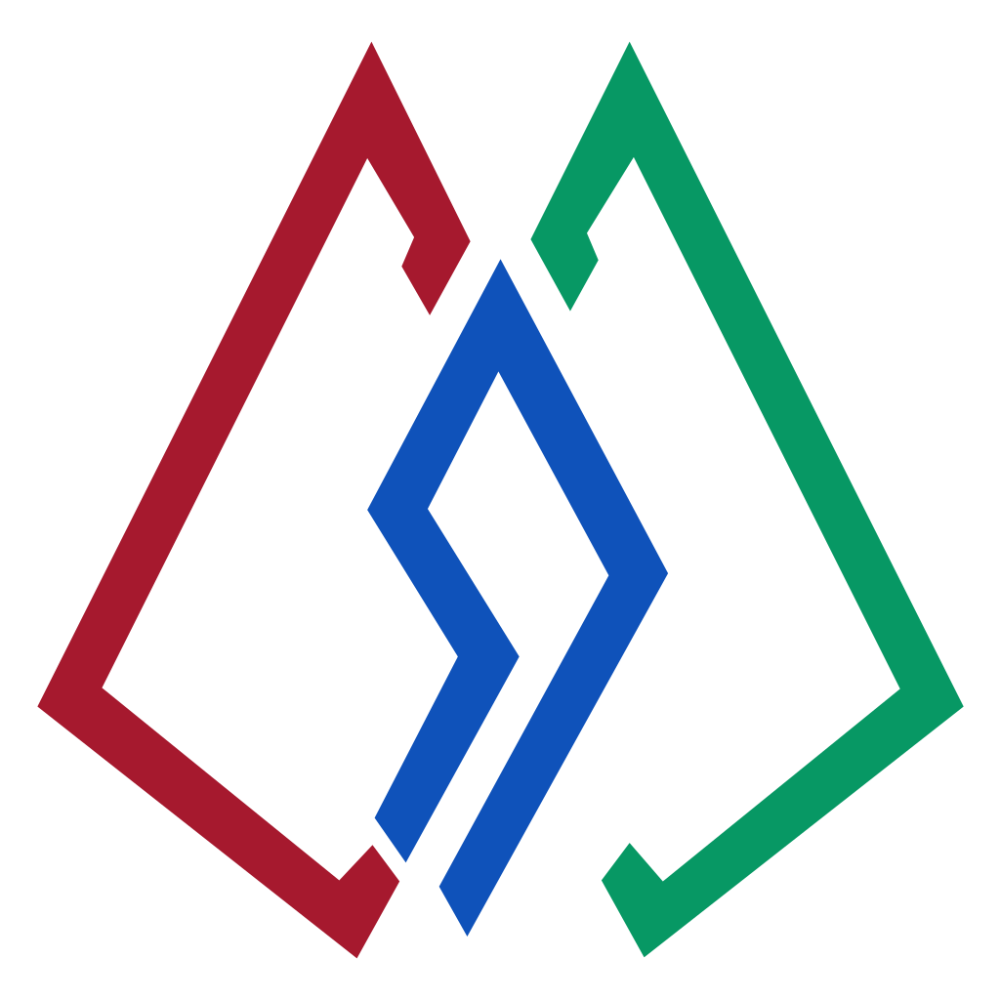
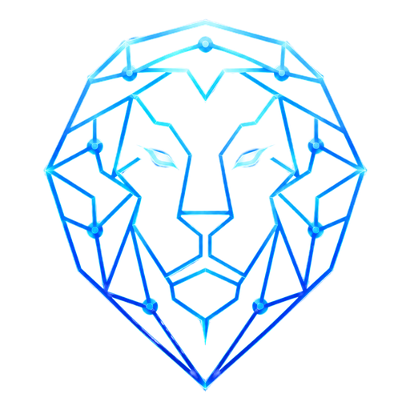
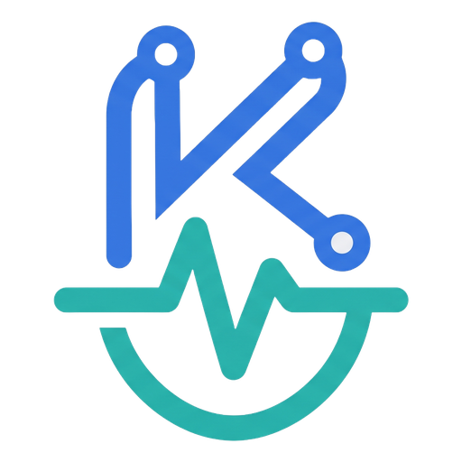
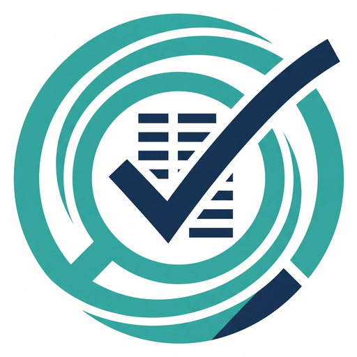
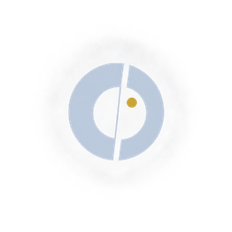

Work
Each project opens a full case study. Solo work, client work and team work are labelled.

Kairos AI decision-intelligence platform. A quantitative engine (MCDA, Monte Carlo, sensitivity analysis) does the measurable reasoning instead of an LLM guessing. Solo projectIn development

Spinzar Gems Co. Luxury gemstone showcase and inquiry platform, built end to end from database schema to live deployment, with an admin dashboard and multi-currency prices. Client work, built soloLive

LEO Locally-run AI assistant with Khowar language memory. Runs fully offline on 8GB of RAM with no GPU and recalls vocabulary from a database instead of inventing it. Solo projectCore complete, paused

KhimiYaar AI Health information chatbot with a lab test analyzer, Pakistan-specific emergency detection, and an X-ray fracture model at over 96% accuracy. Solo projectv1 complete

HireLens AI CV rating platform tuned to Pakistani hiring norms, with hybrid OCR for scanned CVs and semantic matching across 115+ job roles. Solo projectLive SRMS / DineNest Multi-tenant restaurant management system. One installation runs many restaurants, each with isolated data. Team of three, final year project
Complete

Mirror An offline Android game with an opponent that learns how you choose. You score by surprising it. Its learning engine is hand-written arithmetic, no ML library. Solo projectAndroid game, nearly finished